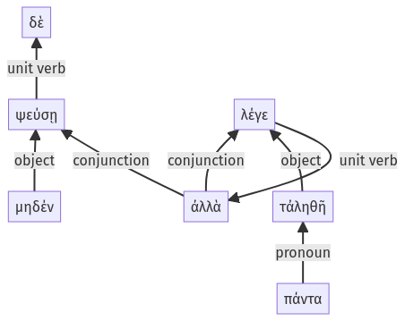

Lysias, Oration 1, 1.18.63-1.18.69a
1.18.29b-1.18.62a | 1.19.1-1.19.12a
Sentence 47
1.18.63-1.18.69a
ψεύσῃ δὲ μηδέν, ἀλλὰ πάντα τἀληθῆ λέγε".
1 ψεύσῃ μηδέν
1 ἀλλὰ πάντα τἀληθῆ λέγε
ψεύσῃ δὲ μηδέν, ἀλλὰ πάντα τἀληθῆ λέγε".
Highlighting:
- connecting words
- unit verb
- subject
- object
Color code:
- independent clause (level 1, transitive verb)
- independent clause (level 1, transitive verb)
